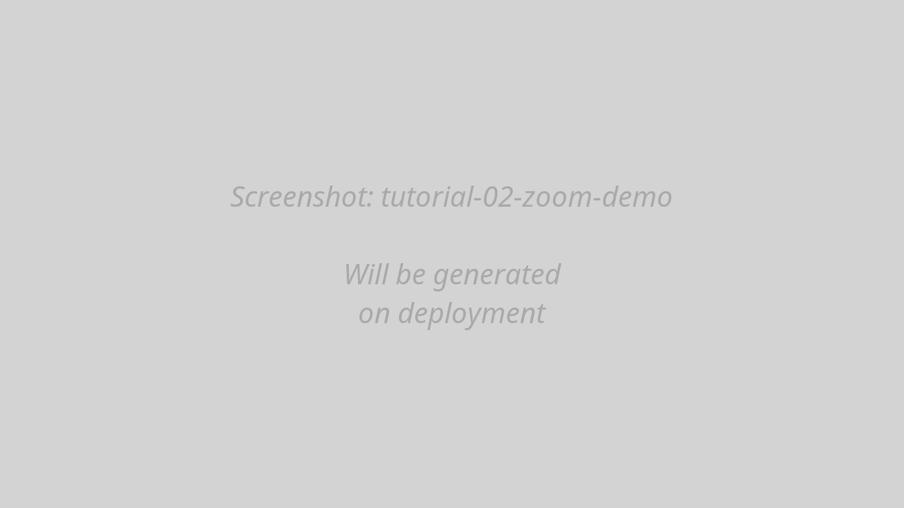

2. Exploring Audio
Navigate, zoom, and play your audio
Overview
In this section, you’ll learn essential navigation techniques:
- Placing the cursor
- Selecting audio regions
- Zooming in and out
- Panning the view
- Playing audio
The Interface Layout
After loading audio, you’ll see:
- Waveform panel (top) — Shows amplitude over time
- Spectrogram panel (middle) — Shows frequency content over time
- Annotation tiers (bottom) — For transcription (covered in section 4)
- Time axis — Shows time in seconds
- Values panel (right) — Shows acoustic measurements at cursor
Placing the Cursor
The cursor is a vertical red line that shows the current time position.
Click anywhere on the waveform or spectrogram
The red cursor line appears at that time position

Cursor placement The values panel updates to show acoustic measurements at the cursor time
Selecting Audio Regions
Select a time range to play or analyze a specific section:
Click and drag across the waveform or spectrogram
A blue highlighted region shows your selection

Selected region Release the mouse to finalize the selection
The selection remains until you click elsewhere or press Escape
Try selecting a single word or syllable in your audio. The selection will be useful for playback (next section).
Keyboard shortcut:
- Escape — Clear selection
Zooming
Zooming lets you see fine-grained detail in the audio.
Use Up/Down arrow keys:
- Up arrow → Zoom in (expands time scale)
- Down arrow → Zoom out (compresses time scale)
- Zoom is centered on the visible window center
OR
Use mouse wheel (centered on mouse position):
- Scroll up → Zoom in
- Scroll down → Zoom out

Zoom demonstration
Arrow keys zoom centered on the visible window center, while mouse wheel zooms centered on the mouse pointer. Use whichever is more convenient!
Zoom Levels
You can zoom from:
- Maximum zoom out: Entire audio file visible (e.g., 0-300s)
- Maximum zoom in: Individual pitch periods visible (~20-50ms windows)
For files >60 seconds, the spectrogram only computes for the visible time window when zoomed. This prevents UI freezing on long recordings.
Mouse wheel zoom:
- Mouse wheel — Zoom centered on mouse position
Panning
Pan the view to explore different parts of the audio horizontally.
Press Left/Right arrow keys to pan left or right (10% of visible window per press)
OR
Two-finger horizontal swipe on trackpad (if available)
Playing Audio
Play your audio or selected regions to hear what you’re analyzing.
Play Entire Visible Window
Press Tab key
Audio plays from the start to the end of the visible window
A moving green playback cursor shows the current position
Press Escape or Space to stop
Play Selected Region
Select a region (click and drag)
Press Space key
Only the selected audio plays
Press Space again to pause, or Escape to stop and deselect
Play from Cursor
Click to place the cursor at a time position
Press Space
Audio plays from cursor to the end of the visible window
Keyboard shortcuts:
| Key | Action |
|---|---|
| Space | Play selection (or from cursor if no selection) |
| Tab | Play entire visible window |
| Escape | Stop playback and clear selection |
The Values Panel
The values panel (right side) shows acoustic measurements at the cursor position:
- Time — Current cursor position (seconds)
- Frequency — Frequency under mouse (Hz)
- Pitch (F0) — Fundamental frequency (Hz)
- Intensity — Sound pressure level (dB)
- F1, F2, F3, F4 — Formant frequencies (Hz)
- HNR — Harmonics-to-Noise Ratio (dB)
- CoG — Spectral center of gravity (Hz)
- More — Additional measurements

Values are only shown when acoustic overlays are enabled (covered in the next section). If you see “—” for all values, you need to enable overlays first.
Practice Exercises
Before moving to the next section, practice these skills:
- Zoom in to see a single word clearly
- Select that word and play it (Space)
- Place the cursor in the middle of a vowel
- Zoom in further to see individual pitch periods
- Pan left and right to explore neighboring sounds
- Zoom out to see the full audio again
Challenge: Find three vowels in your audio. For each one:
- Zoom to show just that vowel
- Place cursor in the middle
- Note the approximate pitch (you’ll see this more clearly in the next section)
Troubleshooting
Zoom isn’t working:
- Ensure mouse is over the waveform/spectrogram area
- Try using +/- keys instead of mouse wheel
- Check that your browser allows scroll events
Playback doesn’t work:
- Check browser audio isn’t muted
- Ensure audio output device is connected
- Try clicking the page first (browsers require user interaction for audio)
Cursor jumps unexpectedly:
- This happens if you click during playback
- Press Escape to stop playback first
Spectrogram shows “Zoom in for spectrogram”:
- Your file is >60 seconds
- Zoom in to a window ≤60 seconds to trigger analysis
- This is normal behavior for long files
What’s Next?
Now that you can navigate the audio, let’s enable acoustic overlays to see pitch, formants, and intensity.
Next: 3. Acoustic Analysis →
Navigation: ← Previous: Loading Audio | Tutorial Overview | Next: Acoustic Analysis →